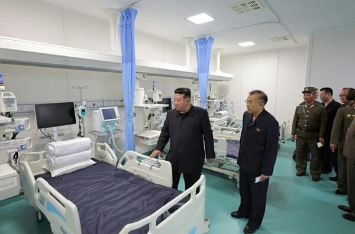

정부가 북한 김정은 정권의 역점 사업인 지방병원 건설 '첫 사례'인 평양시 강동군 병원에 의료장비 166종을 지원할 계획인 것으로 오늘(14일) 확인됐습니다.
보건의료 협력 보따리는 통일부의 '4대 평화교류 프로젝트' 가운데 하나로, 원산갈마 평화관광, 서울-베이징 고속철도 연결 구상, 광역두만개발계획(GTI) 연계 협력 등과 함께 추진되는 사업입니다.
강동군 병원은 김정은 정권이 추진하는 지방 발전 정책의 일환으로, 작년 11월 준공됐습니다.
북한 요즘 돈 많을텐데

어제도 미사일 쏜 애들한테.... 저런걸 왜 줌??